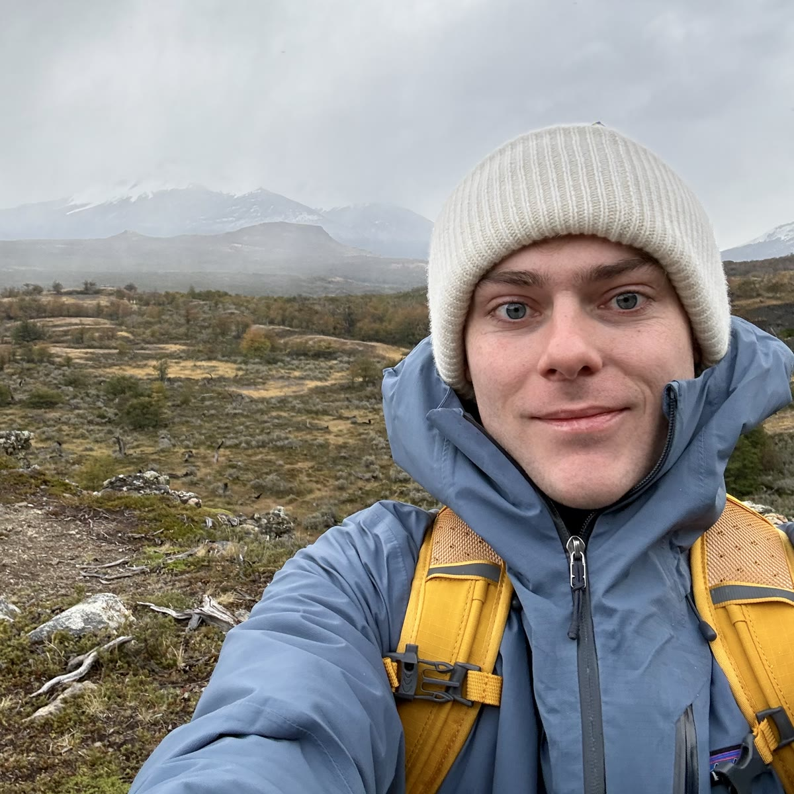

About me
I am a Postdoctoral Research Associate at the Kavli Institute for Particle Astrophysics and Cosmology (KIPAC) and the Center for Decoding the Universe (C4DU), at SLAC National Accelerator Laboratory and Stanford University. I work on the Vera C. Rubin Observatory's Legacy Survey of Space and Time (LSST).
I build and validate physics-driven algorithms that turn raw survey pixels into data precise enough for cosmology. As surveys become limited by systematics rather than statistics, I model pixel-level effects and astrophysics together, from the detector to cosmological observables.
In the Dark Energy Science Collaboration (DESC), my research covers forward models of image systematics, weak gravitational lensing, and galaxy cluster cosmology. At C4DU, I focus on making survey data products trustworthy and accessible for AI/ML.
I also co-founded the KIPAC-Chile Engagement Program and help organize planning for Rubin 2036.